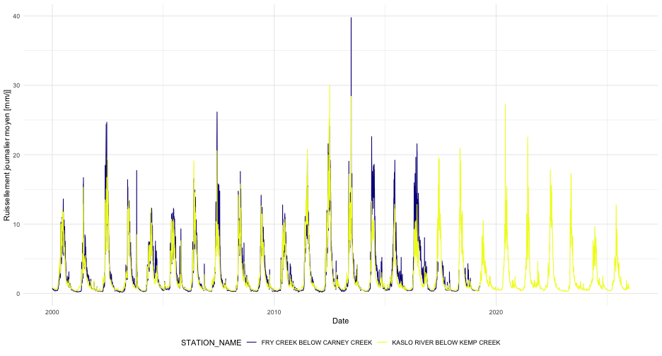

tidyhydat : une introduction
Sam Albers
2026-11-06
Source:vignettes/tidyhydat_introduction_fr.Rmd
tidyhydat_introduction_fr.RmdChargement des packages
En plus de tidyhydat, cette vignette utilise le package dplyr pour la manipulation des données et ggplot2 pour les graphiques.
Le package tidyhydat
Cette vignette présente quelques fonctionnalités clés qui vous
aideront à tirer parti de tidyhydat.
Veuillez noter que les résultats des fonctions de
tidyhydat, y compris les noms de colonnes comme
STATION_NUMBER, Value et Approval
ainsi que les résumés affichés à l’écran, sont en anglais, quelle que
soit la langue de cette vignette.
Téléchargement de HYDAT
Pour utiliser bon nombre des fonctions du package
tidyhydat, vous devez télécharger une version de HYDAT, la
base de données hydrométriques historiques d’Environnement et Changement
climatique Canada (ECCC), puis indiquer à R où la trouver. Heureusement,
tidyhydat s’occupe de tout cela pour vous :
Cette commande télécharge la version la plus récente de HYDAT et
l’enregistre à un emplacement de votre ordinateur où les fonctions de
tidyhydat iront la chercher. Prévoyez du temps, car le
téléchargement est long! Pour savoir où HYDAT a été enregistrée,
exécutez hy_dir(). Une fois HYDAT téléchargée et prête à
l’emploi, vous pouvez commencer vos analyses hydrologiques.
Combinaison des données approuvées et provisoires
Pour la plupart des besoins d’analyse, les fonctions
available_flows() et available_levels()
offrent le portrait le plus complet, car elles combinent les données
historiques approuvées et les données provisoires récentes en temps
réel :
available_flows(
station_number = "08MF005",
start_date = "2020-01-01",
end_date = Sys.Date()
)Ces fonctions :
- combinent automatiquement les données approuvées de HYDAT (ou du service Web si HYDAT n’est pas disponible) et les données provisoires en temps réel;
- ajoutent une colonne
Approvalqui indique si chaque enregistrement est"final"(approuvé) ou"provisional"(sujet à révision); - agrègent les données en temps réel en moyennes journalières par souci de cohérence;
- gèrent adéquatement les données manquantes.
Pour les niveaux d’eau, utilisez
available_levels() :
available_levels(
station_number = "08MF005",
start_date = "2020-01-01",
end_date = Sys.Date()
)Utilisation des fonctions HYDAT
La plupart des fonctions de tidyhydat suivent une
structure d’arguments commune. Nous utiliserons la fonction
hy_daily_flows() dans les exemples qui suivent, mais la
même approche s’applique à la plupart des fonctions du package
(consultez ls("package:tidyhydat") pour obtenir la liste
des objets exportés). Une grande partie des fonctionnalités de
tidyhydat repose sur le choix des stations hydrométriques
qui vous intéressent. Il est donc fréquent de créer des vecteurs de
numéros de station, et il existe plusieurs façons de le faire.
Le cas le plus simple consiste à extraire les données d’une seule
station. Vous pouvez fournir son numéro directement à l’argument
station_number :
hy_daily_flows(station_number = "08LA001")## Queried from version of HYDAT released on 2026-07-17
## Observations: 32,902
## Measurement flags: 6,334
## Parameter(s): Flow
## Date range: 1914-01-01 to 2026-03-31
## Station(s) returned: 1
## Stations requested but not returned:
## All stations returned.
## # A tibble: 32,902 × 5
## STATION_NUMBER Date Parameter Value Symbol
## <chr> <date> <chr> <dbl> <chr>
## 1 08LA001 1914-01-01 Flow 144 <NA>
## 2 08LA001 1914-01-02 Flow 144 <NA>
## 3 08LA001 1914-01-03 Flow 144 <NA>
## 4 08LA001 1914-01-04 Flow 140 <NA>
## 5 08LA001 1914-01-05 Flow 140 <NA>
## 6 08LA001 1914-01-06 Flow 136 <NA>
## 7 08LA001 1914-01-07 Flow 136 <NA>
## 8 08LA001 1914-01-08 Flow 140 <NA>
## 9 08LA001 1914-01-09 Flow 140 <NA>
## 10 08LA001 1914-01-10 Flow 140 <NA>
## # ℹ 32,892 more rowsUne autre méthode consiste à générer le vecteur avec
hy_stations(), puis à le passer à l’argument
station_number. Par exemple, nous pourrions sélectionner
uniquement les stations actives de l’Île-du-Prince-Édouard (code de
province : PE), puis créer un vecteur pour
hy_daily_flows() :
PEI_stns <- hy_stations() |>
filter(HYD_STATUS == "ACTIVE") |>
filter(PROV_TERR_STATE_LOC == "PE") |>
pull_station_number()
PEI_stns## [1] "01CA003" "01CB002" "01CB004" "01CB018" "01CC002" "01CC005" "01CC010"
## [8] "01CC011" "01CD005"
hy_daily_flows(station_number = PEI_stns)## Queried from version of HYDAT released on 2026-07-17
## Observations: 129,466
## Measurement flags: 22,733
## Parameter(s): Flow
## Date range: 1961-08-01 to 2025-01-31
## Station(s) returned: 9
## Stations requested but not returned:
## All stations returned.
## # A tibble: 129,466 × 5
## STATION_NUMBER Date Parameter Value Symbol
## <chr> <date> <chr> <dbl> <chr>
## 1 01CA003 1961-08-01 Flow NA <NA>
## 2 01CB002 1961-08-01 Flow NA <NA>
## 3 01CA003 1961-08-02 Flow NA <NA>
## 4 01CB002 1961-08-02 Flow NA <NA>
## 5 01CA003 1961-08-03 Flow NA <NA>
## 6 01CB002 1961-08-03 Flow NA <NA>
## 7 01CA003 1961-08-04 Flow NA <NA>
## 8 01CB002 1961-08-04 Flow NA <NA>
## 9 01CA003 1961-08-05 Flow NA <NA>
## 10 01CB002 1961-08-05 Flow NA <NA>
## # ℹ 129,456 more rowsNous pouvons aussi réunir le choix des stations et l’extraction des données dans un seul pipeline qui accomplit une seule tâche. Par exemple, si, pour une raison quelconque, nous voulions toutes les stations du Canada dont le nom contient « Canada », nous pourrions réunir la sélection et l’extraction dans un seul pipeline :
search_stn_name("canada") |>
pull_station_number() |>
hy_daily_flows()## Queried from version of HYDAT released on 2026-07-17
## Observations: 93,972
## Measurement flags: 28,750
## Parameter(s): Flow
## Date range: 1918-08-01 to 2025-12-31
## Station(s) returned: 7
## Stations requested but not returned:
## All stations returned.
## # A tibble: 93,972 × 5
## STATION_NUMBER Date Parameter Value Symbol
## <chr> <date> <chr> <dbl> <chr>
## 1 01AK001 1918-08-01 Flow NA <NA>
## 2 01AK001 1918-08-02 Flow NA <NA>
## 3 01AK001 1918-08-03 Flow NA <NA>
## 4 01AK001 1918-08-04 Flow NA <NA>
## 5 01AK001 1918-08-05 Flow NA <NA>
## 6 01AK001 1918-08-06 Flow NA <NA>
## 7 01AK001 1918-08-07 Flow 1.78 <NA>
## 8 01AK001 1918-08-08 Flow 1.78 <NA>
## 9 01AK001 1918-08-09 Flow 1.5 <NA>
## 10 01AK001 1918-08-10 Flow 1.78 <NA>
## # ℹ 93,962 more rowsNous avons vu plus haut que, si seule une partie des dates nous
intéresse, nous pouvons utiliser les arguments start_date
et end_date. Une date doit être fournie à chacun de ces
arguments au format AAAA-MM-JJ. Pour obtenir toutes les données de débit
journalier de la station « 08LA001 » pour 1981, vous devez préciser tous
les jours de 1981 :
hy_daily_flows(station_number = "08LA001",
start_date = "1981-01-01",
end_date = "1981-12-31")Voilà qui résume l’utilisation des fonctions HYDAT dans
tidyhydat.
Fonctions en temps réel
En plus des données approuvées et validées de la base de données
HYDAT, ECCC offre des données non approuvées qui sont susceptibles
d’être révisées. tidyhydat propose trois fonctions pour
accéder à ces sources de données. N’oubliez pas qu’il s’agit de données
non approuvées, qui doivent être traitées comme
telles :
Les stations ne font pas toutes partie du réseau en temps réel. C’est
pourquoi realtime_stations() pointe vers un fichier de
données d’ECCC (en principe à jour) qui recense les stations en temps
réel actives. Nous pouvons utiliser realtime_stations()
pour obtenir un vecteur de stations par province ou territoire. Par
exemple, nous pouvons sélectionner toutes les stations de
l’Île-du-Prince-Édouard comme suit :
realtime_stations(prov_terr_state_loc = "PE")hy_stations() et realtime_stations()
effectuent des tâches semblables, mais à partir de sources de données
différentes. hy_stations() extrait l’information
directement de HYDAT. En plus des stations en temps réel,
hy_stations() renvoie les stations fermées et celles qui ne
transmettent pas de données en temps réel :
hy_stations(prov_terr_state_loc = "PE")À l’inverse, realtime_stations() télécharge toutes les
stations en temps réel. Bien que ce ne soit pas une règle absolue, il
est préférable d’utiliser realtime_stations() pour les
données en temps réel et hy_stations() pour travailler avec
HYDAT. Il est également pertinent de filtrer le résultat de
hy_stations() selon la colonne REAL_TIME.
Datamart du Service météorologique du Canada -
realtime_dd()
Pour télécharger des données en temps réel à partir du Datamart, nous
pouvons utiliser à peu près les mêmes conventions que celles décrites
plus haut. Avec realtime_dd(), il est facile de
sélectionner des stations précises en fournissant le numéro de la
station qui nous intéresse :
realtime_dd(station_number = "08LG006")Une autre option consiste à fournir simplement la province en argument pour télécharger toutes les stations de cette province :
realtime_dd(prov_terr_state_loc = "PE")Service Web en temps réel - realtime_ws()
La fonction realtime_ws() donne accès au service Web en
temps réel d’ECCC. Celui-ci offre plusieurs avantages, notamment l’accès
à une plus grande variété de paramètres et la possibilité de filtrer par
plage de dates. Pour utiliser realtime_ws(), il faut
préciser à la fois la station et le paramètre voulu :
realtime_ws(station_number = "08MF005",
parameters = 46, ## Niveau d'eau
start_date = Sys.Date() - lubridate::days(30),
end_date = Sys.Date())Vous pouvez interroger plusieurs paramètres à la fois. Consultez
data("param_id") pour obtenir la liste complète des codes
de paramètres disponibles :
realtime_ws(station_number = "08MF005",
parameters = c(46, 47), ## Niveau d'eau et débit
start_date = Sys.Date() - lubridate::days(7),
end_date = Sys.Date())Utilisation du service Web sans HYDAT
Pour les petites requêtes qui ne justifient pas le téléchargement de
toute la base de données HYDAT, vous pouvez utiliser
hy_daily_flows() et hy_daily_levels() avec
hydat_path = FALSE pour accéder aux données journalières
historiques directement à partir du service Web d’ECCC. Cette option est
particulièrement utile lorsque vous n’avez besoin que des données de
quelques stations ou d’une période limitée :
Débits et niveaux historiques au moyen du service Web
hy_daily_flows(station_number = "08MF005",
hydat_path = FALSE,
start_date = "2020-01-01",
end_date = "2020-12-31")De même, pour les niveaux d’eau :
hy_daily_levels(station_number = "08NL071",
hydat_path = FALSE,
start_date = "2019-01-01",
end_date = "2019-12-31")Plusieurs stations peuvent être interrogées en un seul appel :
hy_daily_flows(station_number = c("08MF005", "08NL071"),
hydat_path = FALSE,
start_date = "2020-01-01",
end_date = "2020-12-31")Fonctions de recherche
Lorsque vous connaissez une partie du nom d’une station, vous pouvez
aussi utiliser les fonctions auxiliaires search_stn_name()
et search_stn_number() de tidyhydat pour
trouver les stations correspondantes. Par exemple :
search_stn_name("liard")## # A tibble: 10 × 5
## STATION_NUMBER STATION_NAME PROV_TERR_STATE_LOC LATITUDE LONGITUDE
## <chr> <chr> <chr> <dbl> <dbl>
## 1 10AA001 LIARD RIVER AT UPPER C… YT 60.1 -129.
## 2 10AA006 LIARD RIVER BELOW SCUR… YT 60.8 -131.
## 3 10EC004 SOUTH NAHANNI RIVER NE… NT 61.0 -123.
## 4 10ED002 LIARD RIVER NEAR THE M… NT 61.7 -121.
## 5 10BE001 LIARD RIVER AT LOWER C… BC 59.4 -126.
## 6 10BE005 LIARD RIVER ABOVE BEAV… BC 59.7 -124.
## 7 10BE006 LIARD RIVER ABOVE KECH… BC 59.7 -127.
## 8 10ED001 LIARD RIVER AT FORT LI… NT 60.2 -123.
## 9 10ED008 LIARD RIVER AT LINDBER… NT 61.1 -123.
## 10 10GC004 MACKENZIE RIVER ABOVE … NT 61.9 -121.De même, search_stn_number() peut être utile si vous
vous intéressez à toutes les stations du sous-sous-bassin
08MF :
search_stn_number("08MF")## # A tibble: 54 × 5
## STATION_NUMBER STATION_NAME PROV_TERR_STATE_LOC LATITUDE LONGITUDE
## <chr> <chr> <chr> <dbl> <dbl>
## 1 08MF005 FRASER RIVER AT HOPE BC 49.4 -121.
## 2 08MF040 FRASER RIVER ABOVE TEX… BC 50.6 -122.
## 3 08MF062 COQUIHALLA RIVER BELOW… BC 49.5 -121.
## 4 08MF065 NAHATLATCH RIVER BELOW… BC 50.0 -122.
## 5 08MF068 COQUIHALLA RIVER ABOVE… BC 49.4 -121.
## 6 08MF001 ANDERSON RIVER NEAR BO… BC 49.8 -121.
## 7 08MF002 BOULDER CREEK NEAR LAI… BC 49.3 -122.
## 8 08MF003 COQUIHALLA RIVER NEAR … BC 49.4 -121.
## 9 08MF004 FRASER RIVER ABOVE THO… BC 50.2 -122.
## 10 08MF006 WAHLEACH CREEK NEAR LA… BC 49.3 -122.
## # ℹ 44 more rowsUtilisation des jointures
Il faut parfois utiliser l’information contenue dans deux tables de
HYDAT. Dans certains cas, cette information doit être combinée en une
seule table au moyen d’une colonne commune. Nous illustrons ici le
calcul du ruissellement en joignant la table hy_stations à
la table hy_daily_flows selon la colonne
STATION_NUMBER :
stns <- c("08NH130", "08NH005")
runoff_data <- hy_daily_flows(station_number = stns, start_date = "2000-01-01") |>
left_join(
hy_stations(station_number = stns) |>
select(STATION_NUMBER, STATION_NAME, DRAINAGE_AREA_GROSS),
by = "STATION_NUMBER") |>
## conversion en mm/j
mutate(runoff = Value / DRAINAGE_AREA_GROSS * 86400 / 1e6 * 1e3)
ggplot(runoff_data) +
geom_line(aes(x = Date, y = runoff, colour = STATION_NAME)) +
labs(y = "Ruissellement journalier moyen [mm/j]") +
scale_colour_viridis_d(option = "C") +
theme_minimal() +
theme(legend.position = "bottom")
Voilà une façon efficace de tirer parti de la variété de tables offertes dans HYDAT.